| Paket | flashx.textLayout.formats |
| Arabirim | public interface ITextLayoutFormat |
| Uygulayıcılar | ContainerController, FlowElement, TextLayoutFormat |
| Dil Sürümü: | ActionScript 3.0 |
| Çalışma Zamanı Sürümleri: | Flash Player 10, AIR 1.5 |
| Özellik | Tanımlayan: | ||
|---|---|---|---|
| alignmentBaseline : * [salt okunur]
Baskın taban çizgisinin hizalama yaptığı taban çizgisini belirtir. | ITextLayoutFormat | ||
| backgroundAlpha : * [salt okunur]
Arka plana ilişkin alfa (saydamlık) değeri (basamaklama sırasında tanımlanmazsa varsayılan değeri benimser). | ITextLayoutFormat | ||
| backgroundColor : * [salt okunur]
Metnin arka plan rengi (basamaklama sırasında tanımlanmazsa varsayılan değeri benimser). | ITextLayoutFormat | ||
| baselineShift : * [salt okunur]
Taban çizgisinin dominantBaseline değerinden kaydırılması gereken miktar. | ITextLayoutFormat | ||
| blockProgression : * [salt okunur]
Çizgi yerleşiminin dikey veya yatay ilerlemesini belirtir. | ITextLayoutFormat | ||
| breakOpportunity : * [salt okunur]
Satırların saran metni çoklu çizgiler olacak şekilde keserken nerede kesilebileceğini kontrol eder. | ITextLayoutFormat | ||
| cffHinting : * [salt okunur]
Bu metin için kullanılan CFF düzeltme türü. | ITextLayoutFormat | ||
| clearFloats : * [salt okunur]
Metnin kayan noktanın etrafını nasıl sardığını kontrol eder. | ITextLayoutFormat | ||
| color : * [salt okunur]
Metnin rengi. | ITextLayoutFormat | ||
| columnCount : * [salt okunur]
Metin sütunlarının sayısı (basamaklama sırasında tanımsızsa varsayılan değeri benimser). | ITextLayoutFormat | ||
| columnGap : * [salt okunur]
Sütunlar arasında bırakılacak boşluk miktarını piksel cinsinden belirtir (basamaklama sırasında tanımsızsa varsayılan değeri benimser). | ITextLayoutFormat | ||
| columnWidth : * [salt okunur]
Piksel cinsinden sütun genişliği (basamaklama sırasında tanımsızsa varsayılan değeri benimser). | ITextLayoutFormat | ||
| digitCase : * [salt okunur]
Bu metin için kullanılan basamak büyük/küçük harf türü. | ITextLayoutFormat | ||
| digitWidth : * [salt okunur]
Bu metin için kullanılan basamak genişliği türü. | ITextLayoutFormat | ||
| direction : * [salt okunur]
Metin bloğundaki varsayılan iki yönlü gömme düzeyini belirtir. | ITextLayoutFormat | ||
| dominantBaseline : * [salt okunur]
Öğenin satır üzerindeki dikey konumunu belirlemek için hangi öğe taban çizgisinin alignmentBaseline öğesine yapıştığını belirtir. | ITextLayoutFormat | ||
| firstBaselineOffset : * [salt okunur]
Kaptaki ilk satırın taban çizgisi konumunu belirtir. | ITextLayoutFormat | ||
| fontFamily : * [salt okunur]
Kullanılacak fontun adı veya font adlarının virgülle ayrılmış bir listesi. | ITextLayoutFormat | ||
| fontLookup : * [salt okunur]
Kullanılacak font araması. | ITextLayoutFormat | ||
| fontSize : * [salt okunur]
Metnin piksel cinsinden boyutu. | ITextLayoutFormat | ||
| fontStyle : * [salt okunur]
Metnin stili. | ITextLayoutFormat | ||
| fontWeight : * [salt okunur]
Metnin ağırlığı. | ITextLayoutFormat | ||
| justificationRule : * [salt okunur]
Metni bir paragrafta yaslamak için kullanılan kural. | ITextLayoutFormat | ||
| justificationStyle : * [salt okunur]
Paragrafın yaslaması için kullanılan stil. | ITextLayoutFormat | ||
| kerning : * [salt okunur]
Karakter aralığı, okunabilirliği artırmak için belirli karakter çiftleri arasındaki pikselleri ayarlar. | ITextLayoutFormat | ||
| leadingModel : * [salt okunur]
Bir satır aralığı temeli ve satır aralığı yönü kombinasyonu olan satır aralığı modelini belirtir. | ITextLayoutFormat | ||
| ligatureLevel : * [salt okunur]
Fontta tanımlanan bitişik harflerin hangilerinin metinde kullanılabileceğini kontrol eder. | ITextLayoutFormat | ||
| lineBreak : * [salt okunur]
Kabın içindeki sözcük sarmayı kontrol eder (basamaklama sırasında tanımlanmazsa varsayılan değeri benimser). | ITextLayoutFormat | ||
| lineHeight : * [salt okunur]
Metin için satır aralığı kontrolleri. | ITextLayoutFormat | ||
| lineThrough : * [salt okunur]
True ise, üst çizgi uygular, metnin ortasına çizilen bir çizgi. | ITextLayoutFormat | ||
| linkActiveFormat : * [salt okunur]
Normal durumdaki bağlantılar için kullanılan biçimlendirme niteliklerini tanımlar. | ITextLayoutFormat | ||
| linkHoverFormat : * [salt okunur]
Fare bir bağlantının sınırları dahilinde olduğunda (üzerine geldiğinde), üzerine gelinen bağlantılar için kullanılan biçimlendirme niteliklerini tanımlar. | ITextLayoutFormat | ||
| linkNormalFormat : * [salt okunur]
Normal durumdaki bağlantılar için kullanılan biçimlendirme niteliklerini tanımlar. | ITextLayoutFormat | ||
| listAutoPadding : * [salt okunur]
Bu, listelerin başlangıç kenarı için, listenin o tarafındaki dolgu değeri auto olduğunda otomatik girinti belirtir. | ITextLayoutFormat | ||
| listMarkerFormat : * [salt okunur]
Biçimlendirme nitelikleri listesi işaretlerini tanımlar. | ITextLayoutFormat | ||
| listStylePosition : * [salt okunur]
Geçerli değerler ListStylePosition.INSIDE, ListStylePosition.OUTSIDE, FormatValue.INHERIT değerleridir. Varsayılan değer, ayarlanmamış görünen tanımsız değerdir. Bu özellik, basamaklama sırasında tanımlanmazsa, değerini bir üst öğeden miras alır. | ITextLayoutFormat | ||
| listStyleType : * [salt okunur]
Geçerli değerler ListStyleType.UPPER_ALPHA, ListStyleType.LOWER_ALPHA, ListStyleType.UPPER_ROMAN, ListStyleType.LOWER_ROMAN, ListStyleType.NONE, ListStyleType.DISC, ListStyleType.CIRCLE, ListStyleType.SQUARE, ListStyleType.BOX, ListStyleType.CHECK, ListStyleType.DIAMOND, ListStyleType.HYPHEN, ListStyleType.ARABIC_INDIC, ListStyleType.BENGALI, ListStyleType.DECIMAL, ListStyleType.DECIMAL_LEADING_ZERO, ListStyleType.DEVANAGARI, ListStyleType.GUJARATI, ListStyleType.GURMUKHI, ListStyleType.KANNADA, ListStyleType.PERSIAN, ListStyleType.THAI, ListStyleType.URDU, ListStyleType.CJK_EARTHLY_BRANCH, ListStyleType.CJK_HEAVENLY_STEM, ListStyleType.HANGUL, ListStyleType.HANGUL_CONSTANT, ListStyleType.HIRAGANA, ListStyleType.HIRAGANA_IROHA, ListStyleType.KATAKANA, ListStyleType.KATAKANA_IROHA, ListStyleType.LOWER_ALPHA, ListStyleType.LOWER_GREEK, ListStyleType.LOWER_LATIN, ListStyleType.UPPER_ALPHA, ListStyleType.UPPER_GREEK, ListStyleType.UPPER_LATIN, FormatValue.INHERIT değerleridir. Varsayılan değer, ayarlanmamış görünen tanımsız değerdir. Bu özellik, basamaklama sırasında tanımlanmazsa, değerini bir üst öğeden miras alır. | ITextLayoutFormat | ||
| locale : * [salt okunur]
Metnin yerel ayarı. | ITextLayoutFormat | ||
| paddingBottom : * [salt okunur]
Piksel cinsinden alt daraltma. | ITextLayoutFormat | ||
| paddingLeft : * [salt okunur]
Piksel cinsinden sol daraltma. | ITextLayoutFormat | ||
| paddingRight : * [salt okunur]
Piksel cinsinden sağ daraltma. | ITextLayoutFormat | ||
| paddingTop : * [salt okunur]
Piksel cinsinden üst daraltma. | ITextLayoutFormat | ||
| paragraphEndIndent : * [salt okunur]
Paragrafın uç kenarına uygulanacak girinti miktarını piksel cinsinden belirten bir sayı. | ITextLayoutFormat | ||
| paragraphSpaceAfter : * [salt okunur]
Paragraftan sonra bırakılacak piksel cinsinden boşluk miktarını belirten bir Number. | ITextLayoutFormat | ||
| paragraphSpaceBefore : * [salt okunur]
Paragraftan önce bırakılacak piksel cinsinden boşluk miktarını belirten bir Number. | ITextLayoutFormat | ||
| paragraphStartIndent : * [salt okunur]
Paragrafın uç kenarına uygulanacak girinti miktarını piksel cinsinden belirten bir Sayı. | ITextLayoutFormat | ||
| renderingMode : * [salt okunur]
Bu metin için kullanılan oluşturma modu. | ITextLayoutFormat | ||
| styleName : * [salt okunur]
Öğeye tanımlayıcı bir sınıf atar ve böylece styleName öğesine başvurularak öğe için bir stil ayarlanmasını olanaklı kılar. | ITextLayoutFormat | ||
| tabStops : * [salt okunur]
Paragrafla ilişkili sekme duraklarını belirtir. | ITextLayoutFormat | ||
| textAlign : * [salt okunur]
Kapla ilişkili paragraftaki satırların hizalaması. | ITextLayoutFormat | ||
| textAlignLast : * [salt okunur]
Yaslanan metindeki kapla ilişkili paragraftaki son (veya tek) satırın hizalaması. | ITextLayoutFormat | ||
| textAlpha : * [salt okunur]
Metine ilişkin alfa (saydamlık) değeri. | ITextLayoutFormat | ||
| textDecoration : * [salt okunur]
Metin üzerindeki dekorasyon. | ITextLayoutFormat | ||
| textIndent : * [salt okunur]
Paragrafın ilk satırına uygulanacak girinti miktarını piksel cinsinden belirten bir Sayı. | ITextLayoutFormat | ||
| textJustify : * [salt okunur]
Metni yaslamak için seçenekler belirler. | ITextLayoutFormat | ||
| textRotation : * [salt okunur]
Bu metni döndürecek derece sayısını belirler. | ITextLayoutFormat | ||
| trackingLeft : * [salt okunur]
Karakterin soluna uygulanacak izleme (manuel karakter aralığı) miktarını piksel cinsinden belirten sayı (veya fontSize yüzdesi, %120 gibi). | ITextLayoutFormat | ||
| trackingRight : * [salt okunur]
Karakterin sağına uygulanacak izleme (manuel karakter aralığı) miktarını piksel cinsinden belirten sayı (veya fontSize yüzdesi, %120 gibi). | ITextLayoutFormat | ||
| typographicCase : * [salt okunur]
Bu metin için kullanılan basamak büyük/küçük harf türü. | ITextLayoutFormat | ||
| verticalAlign : * [salt okunur]
Dikey hizalama veya yaslama (basamaklama sırasında tanımsızsa varsayılan değeri benimser). | ITextLayoutFormat | ||
| whiteSpaceCollapse : * [salt okunur]
Bir TextFlow öğesinin içine metin aktarırken beyaz boşluğu daraltır veya korur. | ITextLayoutFormat | ||
| wordSpacing : * [salt okunur]
Yaslama sırasında kullanılacak kelimeler arasındaki optimum, minimum ve maksimum aralığı (normal alan genişliğinin çarpanı olarak) belirtir. | ITextLayoutFormat | ||
| Yöntem | Tanımlayan: | ||
|---|---|---|---|
Stil adını belirten styleProp parametresi tarafından belirtilen stil değerini döndürür. | ITextLayoutFormat | ||
alignmentBaseline | özellik |
alignmentBaseline:* [salt okunur] | Dil Sürümü: | ActionScript 3.0 |
| Çalışma Zamanı Sürümleri: | Flash Player 10, AIR 1.5 |
Baskın taban çizgisinin hizalama yaptığı taban çizgisini belirtir. Örneğin, dominantBaseline öğesini ASCENT olacak şekilde ayarlarsanız, alignmentBaseline öğesini DESCENT olacak şekilde ayarlamak metnin üst kısmını DESCENT taban çizgisiyle veya çizginin alt kısmıyla hizalar. Genellikle satırdaki en büyük öğe, satır taban çizgilerini belirler.

Geçerli değerler şunlardır: TextBaseline.ROMAN, TextBaseline.ASCENT, TextBaseline.DESCENT, TextBaseline.IDEOGRAPHIC_TOP, TextBaseline.IDEOGRAPHIC_CENTER, TextBaseline.IDEOGRAPHIC_BOTTOM, TextBaseline.USE_DOMINANT_BASELINE, FormatValue.INHERIT.
Varsayılan değer, ayarlanmamış görünen tanımsız değerdir.
Bu özellik, basamaklama sırasında tanımlanmazsa, değerini bir üst öğeden miras alır. Bu özelliği herhangi bir üst öğe ayarlamadıysa, bir TextBaseline.USE_DOMINANT_BASELINE değerine sahip olacaktır.
Uygulama
public function get alignmentBaseline():*Atar
RangeError — ayarlanan değer bu özelliğin erişiminde olmadığında
|
İlgili API Öğeleri
Örnek ( Bu örnek nasıl kullanılır? )
alignmentBaseline öğesini USE_DOMINANT_BASELINE, DESCENT ve IDEOGRAPHIC_CENTER olmak üzere üç farklı değere ayarlar, bunlar ASCENT şeklinde ayarlanmış ve dominantBaseline öğesine sahip bir paragraftaki üç aralık içindir.
package flashx.textLayout.formats.examples {
import flash.display.Sprite;
import flash.text.engine.TextBaseline;
import flashx.textLayout.container.ContainerController;
import flashx.textLayout.elements.ParagraphElement;
import flashx.textLayout.elements.SpanElement;
import flashx.textLayout.elements.TextFlow;
import flashx.textLayout.formats.TextAlign;
public class TextLayoutFormat_alignmentBaselineExample extends Sprite
{
public function TextLayoutFormat_alignmentBaselineExample()
{
// create text flow with dominantBaseline of ASCENT and 3 spans
var textFlow:TextFlow = new TextFlow();
var paragraph:ParagraphElement = new ParagraphElement();
paragraph.fontFamily = "Helvetica";
paragraph.fontSize = 20;
paragraph.dominantBaseline = TextBaseline.ASCENT
var spanOne:SpanElement = new SpanElement();
var spanTwo:SpanElement = new SpanElement();
var spanThree:SpanElement = new SpanElement();
spanOne.text = "Hello, World ";
spanTwo.text = "Hello, World ";
spanThree.text = "Hello, World";
// add spans to paragraph and specify alignment baseline for each
paragraph.addChild(spanOne);
spanOne.alignmentBaseline = TextBaseline.USE_DOMINANT_BASELINE;
paragraph.addChild(spanTwo);
spanTwo.alignmentBaseline = TextBaseline.DESCENT;
paragraph.addChild(spanThree);
spanThree.alignmentBaseline = TextBaseline.IDEOGRAPHIC_CENTER;
// add paragraph to TextFlow and set container position
textFlow.addChild(paragraph);
this.x = 50;
this.y = 100;
// update controller to display on stage
textFlow.flowComposer.addController(new ContainerController(this,400,300));
textFlow.flowComposer.updateAllControllers();
}
}
}
backgroundAlpha | özellik |
backgroundAlpha:* [salt okunur] | Dil Sürümü: | ActionScript 3.0 |
| Çalışma Zamanı Sürümleri: | Flash Player 10, AIR 1.5 |
Arka plana ilişkin alfa (saydamlık) değeri (basamaklama sırasında tanımlanmazsa varsayılan değeri benimser). 0 değeri tamamen saydamlığı ifade ederken, 1 değeri tamamen opaklığı ifade eder. Alfa özelliği 0 olarak ayarlanmış görüntüleme nesneleri, görünmez olsa da etkindir.
Geçerli değerler, 0 ile 1 arasında bir değer ve FormatValue.INHERIT değeridir.
Varsayılan değer, ayarlanmamış görünen tanımsız değerdir.
Basamaklama sırasında tanımlanmazsa bu özellik 1 değerine sahip olacaktır.
Uygulama
public function get backgroundAlpha():*Atar
RangeError — ayarlanan değer bu özelliğin erişiminde olmadığında
|
backgroundColor | özellik |
backgroundColor:* [salt okunur] | Dil Sürümü: | ActionScript 3.0 |
| Çalışma Zamanı Sürümleri: | Flash Player 10, AIR 1.5 |
Metnin arka plan rengi (basamaklama sırasında tanımlanmazsa varsayılan değeri benimser). BackgroundColor.TRANSPARENT sabit değeri veya üç 8-bit RGB (kırmızı, yeşil, mavi) değerini belirten bir onaltılık değer; örneğin, 0xFF0000 kırmızıdır ve 0x00FF00 yeşildir.
Bir dize olarak geçerli değerler BackgroundColor.TRANSPARENT, FormatValue.INHERIT ve 0x0 ila 0xffffffff değerinde uint öğeleridir.
Varsayılan değer, ayarlanmamış görünen tanımsız değerdir.
Basamaklama sırasında tanımsızsa bu özellik BackgroundColor.TRANSPARENT değerine sahip olacaktır.
Uygulama
public function get backgroundColor():*Atar
RangeError — ayarlanan değer bu özelliğin erişiminde olmadığında
|
İlgili API Öğeleri
baselineShift | özellik |
baselineShift:* [salt okunur] | Dil Sürümü: | ActionScript 3.0 |
| Çalışma Zamanı Sürümleri: | Flash Player 10, AIR 1.5 |
Taban çizgisinin dominantBaseline değerinden kaydırılması gereken miktar. Birimler piksel cinsindendir veya bir fontSize yüzdesidir (bu durumda %140 gibi bir dize değeri girin). Pozitif değerler, yatay metin için satırı yukarı kaydırırken (dikey için sağa), negatif değerler ise yatay metin için satırı aşağı kaydırır (dikey için sola).
Geçerli değerler BaselineShift.SUPERSCRIPT, BaselineShift.SUBSCRIPT, FormatValue.INHERIT değerleridir.
Sayı şeklindeki geçerli değerler, -1000 ile 1000 arasındadır.
Yüzde şeklindeki geçerli değerler, -1000 ile 1000 arasında olan sayılardır.
Varsayılan değer, ayarlanmamış görünen tanımsız değerdir.
Bu özellik, basamaklama sırasında tanımlanmazsa, değerini bir üst öğeden miras alır. Bu özelliği herhangi bir üst öğe ayarlamadıysa, bir 0.0 değerine sahip olacaktır.
Uygulama
public function get baselineShift():*Atar
RangeError — ayarlanan değer bu özelliğin erişiminde olmadığında
|
İlgili API Öğeleri
blockProgression | özellik |
blockProgression:* [salt okunur] | Dil Sürümü: | ActionScript 3.0 |
| Çalışma Zamanı Sürümleri: | Flash Player 10, AIR 1.5 |
Çizgi yerleşiminin dikey veya yatay ilerlemesini belirtir. Satırlar yukarıdan aşağıya (BlockProgression.TB, yatay metin için kullanılır) veya sağdan sola (BlockProgression.RL, dikey metin için kullanılır) yerleştirilir.
Geçerli değerler BlockProgression.RL, BlockProgression.TB, FormatValue.INHERIT değerleridir.
Varsayılan değer, ayarlanmamış görünen tanımsız değerdir.
Bu özellik, basamaklama sırasında tanımlanmazsa, değerini bir üst öğeden miras alır. Bu özelliği herhangi bir üst öğe ayarlamadıysa, bir BlockProgression.TB değerine sahip olacaktır.
Uygulama
public function get blockProgression():*Atar
RangeError — ayarlanan değer bu özelliğin erişiminde olmadığında
|
İlgili API Öğeleri
breakOpportunity | özellik |
breakOpportunity:* [salt okunur] | Dil Sürümü: | ActionScript 3.0 |
| Çalışma Zamanı Sürümleri: | Flash Player 10, AIR 1.5 |
Satırların saran metni çoklu çizgiler olacak şekilde keserken nerede kesilebileceğini kontrol eder. Metni normal şekilde kesmek için BreakOpportunity.AUTO değerine ayarlayın. Metin ölçüden taşmadıkça ve satırı kesecek başka yer kalmaması gibi bir durum olmadıkça metni kesmemek için BreakOpportunity.NONE değerine ayarlayın. Satırın yalnızca kelimelerin arasında kesilmesi yerine herhangi bir yerde kesilmesine izin vermek için BreakOpportunity.ANY değerine ayarlayın. Tipografik kümelerin her birinin ayrı bir satıra yerleştirilmesi için BreakOpportunity.ALL öğesine ayarlayın (bir yol üzerinde olan metinler için kullanışlıdır).
Geçerli değerler BreakOpportunity.ALL, BreakOpportunity.ANY, BreakOpportunity.AUTO, BreakOpportunity.NONE, FormatValue.INHERIT değerleridir.
Varsayılan değer, ayarlanmamış görünen tanımsız değerdir.
Bu özellik, basamaklama sırasında tanımlanmazsa, değerini bir üst öğeden miras alır. Bu özelliği herhangi bir üst öğe ayarlamadıysa, bir BreakOpportunity.AUTO değerine sahip olacaktır.
Uygulama
public function get breakOpportunity():*Atar
RangeError — ayarlanan değer bu özelliğin erişiminde olmadığında
|
İlgili API Öğeleri
cffHinting | özellik |
cffHinting:* [salt okunur] | Dil Sürümü: | ActionScript 3.0 |
| Çalışma Zamanı Sürümleri: | Flash Player 10, AIR 1.5 |
Bu metin için kullanılan CFF düzeltme türü. CFF düzeltme, Flash çalışma zamanının güçlü yatay gövdeleri bir alt piksel ızgarasına sığmaya zorlayıp zorlamadığını belirler. Bu özellik yalnızca renderingMode özelliği RenderingMode.CFF değerine ayarlanırsa ve font gömülüyse (fontLookup özelliği FontLookup.EMBEDDED_CFF değerine ayarlıysa) uygulanır. Küçük ekran boyutlarında düzeltme özelliği, okuyucular için net ve okunaklı metin üretir.
Geçerli değerler CFFHinting.NONE, CFFHinting.HORIZONTAL_STEM, FormatValue.INHERIT değerleridir.
Varsayılan değer, ayarlanmamış görünen tanımsız değerdir.
Bu özellik, basamaklama sırasında tanımlanmazsa, değerini bir üst öğeden miras alır. Bu özelliği herhangi bir üst öğe ayarlamadıysa, bir CFFHinting.HORIZONTAL_STEM değerine sahip olacaktır.
Uygulama
public function get cffHinting():*Atar
RangeError — ayarlanan değer bu özelliğin erişiminde olmadığında
|
İlgili API Öğeleri
clearFloats | özellik |
clearFloats:* [salt okunur] | Dil Sürümü: | ActionScript 3.0 |
| Çalışma Zamanı Sürümleri: | Flash Player 10, AIR 1.5 |
Metnin kayan noktanın etrafını nasıl sardığını kontrol eder. none değeri, metnin bir kayan noktanın etrafına en yakın şekilde sarılmasına izin verir. Left değeri, metnin kabın sol kayan noktaya sahip bölümünü atlamasına ve right değeri metnin kabın sağ kayan noktaya sahip bölümünü atlamasına neden olur. İki değerin birden olması metnin kayan noktaları atlamasına neden olur.
Geçerli değerler ClearFloats.START, ClearFloats.END, ClearFloats.LEFT, ClearFloats.RIGHT, ClearFloats.BOTH, ClearFloats.NONE, FormatValue.INHERIT değerleridir.
Varsayılan değer, ayarlanmamış görünen tanımsız değerdir.
Basamaklama sırasında tanımsızsa bu özellik ClearFloats.NONE değerine sahip olacaktır.
Uygulama
public function get clearFloats():*Atar
RangeError — ayarlanan değer bu özelliğin erişiminde olmadığında
|
İlgili API Öğeleri
color | özellik |
color:* [salt okunur] | Dil Sürümü: | ActionScript 3.0 |
| Çalışma Zamanı Sürümleri: | Flash Player 10, AIR 1.5 |
Metnin rengi. Üç 8-bit RGB (kırmızı, yeşil, mavi) değerlerini belirten onaltılık bir sayı; örneğin, 0xFF0000 kırmızıdır ve 0x00FF00 yeşildir.
Varsayılan değer, ayarlanmamış görünen tanımsız değerdir.
Bu özellik, basamaklama sırasında tanımlanmazsa, değerini bir üst öğeden miras alır. Bu özelliği herhangi bir üst öğe ayarlamadıysa, bir 0 değerine sahip olacaktır.
Uygulama
public function get color():*Atar
RangeError — ayarlanan değer bu özelliğin erişiminde olmadığında
|
columnCount | özellik |
columnCount:* [salt okunur] | Dil Sürümü: | ActionScript 3.0 |
| Çalışma Zamanı Sürümleri: | Flash Player 10, AIR 1.5 |
Metin sütunlarının sayısı (basamaklama sırasında tanımsızsa varsayılan değeri benimser). Sütun numarası, diğer sütun ayarlarını geçersiz kılar. Değer bir tam sayı veya belirtilmemişse FormatValue.AUTO değeridir. columnCount belirtilmezse, kaba sığacak sayıda sütun oluşturmak için columnWidth kullanılır.
Dize olarak geçerli değerler şunlardır: FormatValue.AUTO, FormatValue.INHERIT ve 1 ile 50 arasında ints öğesi.
Varsayılan değer, ayarlanmamış görünen tanımsız değerdir.
Basamaklama sırasında tanımsızsa bu özellik FormatValue.AUTO değerine sahip olacaktır.
Uygulama
public function get columnCount():*Atar
RangeError — ayarlanan değer bu özelliğin erişiminde olmadığında
|
İlgili API Öğeleri
columnGap | özellik |
columnGap:* [salt okunur] | Dil Sürümü: | ActionScript 3.0 |
| Çalışma Zamanı Sürümleri: | Flash Player 10, AIR 1.5 |
Sütunlar arasında bırakılacak boşluk miktarını piksel cinsinden belirtir (basamaklama sırasında tanımsızsa varsayılan değeri benimser). Değer bir Number değeridir.
Geçerli değerler, 0 ile 1000 arasında bir değer ve FormatValue.INHERIT değeridir.
Varsayılan değer, ayarlanmamış görünen tanımsız değerdir.
Basamaklama sırasında tanımsızsa bu özellik 20 değerine sahip olacaktır.
Uygulama
public function get columnGap():*Atar
RangeError — ayarlanan değer bu özelliğin erişiminde olmadığında
|
columnWidth | özellik |
columnWidth:* [salt okunur] | Dil Sürümü: | ActionScript 3.0 |
| Çalışma Zamanı Sürümleri: | Flash Player 10, AIR 1.5 |
Piksel cinsinden sütun genişliği (basamaklama sırasında tanımsızsa varsayılan değeri benimser). Sütunların genişliğini belirtip sayısını belirtmezseniz, TextLayout öğesi, kap genişliği ve columnGap ayarlarına göre o genişlikte olabildiğince sayıda sütun oluşturur. Kalan alanlar son sütundan sonra bırakılır. Değer bir Number değeridir.
Dize olarak geçerli değerler şunlardır: FormatValue.AUTO, FormatValue.INHERIT ve 0 ile 8000 arasındaki sayılar.
Varsayılan değer, ayarlanmamış görünen tanımsız değerdir.
Basamaklama sırasında tanımsızsa bu özellik FormatValue.AUTO değerine sahip olacaktır.
Uygulama
public function get columnWidth():*Atar
RangeError — ayarlanan değer bu özelliğin erişiminde olmadığında
|
İlgili API Öğeleri
digitCase | özellik |
digitCase:* [salt okunur] | Dil Sürümü: | ActionScript 3.0 |
| Çalışma Zamanı Sürümleri: | Flash Player 10, AIR 1.5 |
Bu metin için kullanılan basamak büyük/küçük harf türü. Değeri DigitCase.OLD_STYLE değerine ayarlamak, küçük harf formlarını değişen alt ve üst öğelere yuvarlar. Karakterler arasında orantılı şekilde boşluk bırakılır. Bu stil yalnızca seçili yazı biçimlerinde kullanılabilir olup daha çok tamamlayıcı veya uzman bir fontta bulunur. DigitCase.LINING ayarı, büyük harf yüksekliğine sahiptir ve genellikle grafiklerde hizalanmak üzere eş aralıklı olarak yazılır.
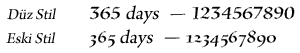
Geçerli değerler DigitCase.DEFAULT, DigitCase.LINING, DigitCase.OLD_STYLE, FormatValue.INHERIT değerleridir.
Varsayılan değer, ayarlanmamış görünen tanımsız değerdir.
Bu özellik, basamaklama sırasında tanımlanmazsa, değerini bir üst öğeden miras alır. Bu özelliği herhangi bir üst öğe ayarlamadıysa, bir DigitCase.DEFAULT değerine sahip olacaktır.
Uygulama
public function get digitCase():*Atar
RangeError — ayarlanan değer bu özelliğin erişiminde olmadığında
|
İlgili API Öğeleri
digitWidth | özellik |
digitWidth:* [salt okunur] | Dil Sürümü: | ActionScript 3.0 |
| Çalışma Zamanı Sürümleri: | Flash Player 10, AIR 1.5 |
Bu metin için kullanılan basamak genişliği türü. Bu, ayrı sayılarda en iyi görünen DigitWidth.PROPORTIONAL öğesi veya tablolar, çizelgeler ve dikey sıralar için en uygun olan DigitWidth.TABULAR öğesi olabilir.
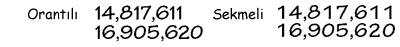
Geçerli değerler DigitWidth.DEFAULT, DigitWidth.PROPORTIONAL, DigitWidth.TABULAR, FormatValue.INHERIT değerleridir.
Varsayılan değer, ayarlanmamış görünen tanımsız değerdir.
Bu özellik, basamaklama sırasında tanımlanmazsa, değerini bir üst öğeden miras alır. Bu özelliği herhangi bir üst öğe ayarlamadıysa, bir DigitWidth.DEFAULT değerine sahip olacaktır.
Uygulama
public function get digitWidth():*Atar
RangeError — ayarlanan değer bu özelliğin erişiminde olmadığında
|
İlgili API Öğeleri
direction | özellik |
direction:* [salt okunur] | Dil Sürümü: | ActionScript 3.0 |
| Çalışma Zamanı Sürümleri: | Flash Player 10, AIR 1.5 |
Metin bloğundaki varsayılan iki yönlü gömme düzeyini belirtir. Latin stili yazılarda olduğu gibi soldan sağa okuma veya Arapça ya da İbranice'de olduğu gibi sağdan sola okuma. Bu özellik ayrıca kap düzeyinde uygulandığında sütun yönünü de etkiler. Sütunlar da tıpkı metinler gibi soldan sağa veya sağdan sola olabilir. Aşağıda bazı örneklere yer verilmiştir:

Geçerli değerler Direction.LTR, Direction.RTL, FormatValue.INHERIT değerleridir.
Varsayılan değer, ayarlanmamış görünen tanımsız değerdir.
Bu özellik, basamaklama sırasında tanımlanmazsa, değerini bir üst öğeden miras alır. Bu özelliği herhangi bir üst öğe ayarlamadıysa, bir Direction.LTR değerine sahip olacaktır.
Uygulama
public function get direction():*Atar
RangeError — ayarlanan değer bu özelliğin erişiminde olmadığında
|
İlgili API Öğeleri
dominantBaseline | özellik |
dominantBaseline:* [salt okunur] | Dil Sürümü: | ActionScript 3.0 |
| Çalışma Zamanı Sürümleri: | Flash Player 10, AIR 1.5 |
Öğenin satır üzerindeki dikey konumunu belirlemek için hangi öğe taban çizgisinin alignmentBaseline öğesine yapıştığını belirtir. Bir TextBaseline.AUTO değeri baskın taban çizgisini üst paragrafın locale özelliğine dayanarak seçer. Japonca ve Çince için, seçili taban çizgisi değeri TextBaseline.IDEOGRAPHIC_CENTER olur; diğerlerinin tümü için değer TextBaseline.ROMAN olur. Bu satır taban çizgisi tercihleri, font ve font boyutu tercihiyle belirlenir.
Geçerli değerler FormatValue.AUTO, TextBaseline.ROMAN, TextBaseline.ASCENT, TextBaseline.DESCENT, TextBaseline.IDEOGRAPHIC_TOP, TextBaseline.IDEOGRAPHIC_CENTER, TextBaseline.IDEOGRAPHIC_BOTTOM, FormatValue.INHERIT değerleridir.
Varsayılan değer, ayarlanmamış görünen tanımsız değerdir.
Bu özellik, basamaklama sırasında tanımlanmazsa, değerini bir üst öğeden miras alır. Bu özelliği herhangi bir üst öğe ayarlamadıysa, bir FormatValue.AUTO değerine sahip olacaktır.
Uygulama
public function get dominantBaseline():*Atar
RangeError — ayarlanan değer bu özelliğin erişiminde olmadığında
|
İlgili API Öğeleri
firstBaselineOffset | özellik |
firstBaselineOffset:* [salt okunur] | Dil Sürümü: | ActionScript 3.0 |
| Çalışma Zamanı Sürümleri: | Flash Player 10, AIR 1.5 |
Kaptaki ilk satırın taban çizgisi konumunu belirtir. Bu özelliğin hangi satır taban çizgisini ifade ettiği, kap düzeyindeki yerel ayara bağlıdır. Japonca ve Çince için bu değer TextBaseline.IDEOGRAPHIC _BOTTOM iken, diğerlerinin tümü için bu değer TextBaseline.ROMAN'dır. Kabın üst daraltmasından (veya blockProgression öğesi RL ise, sağ daraltmadan) birinci satır taban çizgisine kadar olan uzaklık, satırın üst uzantısına eşit olduğunu belirtecek şekilde BaselineOffset.ASCENT olabileceği gibi, o birinci satırın yüksekliğine eşit olduğunu belirtecek şekilde BaselineOffset.LINE_HEIGHT değeri veya belirli bir mutlak mesafeyi belirtmek için herhangi bir sabit değer sayısı da olabilir. BaselineOffset.AUTOseçeneği, satırın üst uzantısını kabın üst daraltmasıyla hizalar.


Dize olarak geçerli olan değerler BaselineOffset.AUTO, BaselineOffset.ASCENT, BaselineOffset.LINE_HEIGHT, FormatValue.INHERIT ve 0 ile 1000 arasındaki sayılardır.
Varsayılan değer, ayarlanmamış görünen tanımsız değerdir.
Bu özellik, basamaklama sırasında tanımlanmazsa, değerini bir üst öğeden miras alır. Bu özelliği herhangi bir üst öğe ayarlamadıysa, bir BaselineOffset.AUTO değerine sahip olacaktır.
Uygulama
public function get firstBaselineOffset():*Atar
RangeError — ayarlanan değer bu özelliğin erişiminde olmadığında
|
İlgili API Öğeleri
fontFamily | özellik |
fontFamily:* [salt okunur] | Dil Sürümü: | ActionScript 3.0 |
| Çalışma Zamanı Sürümleri: | Flash Player 10, AIR 1.5 |
Kullanılacak fontun adı veya font adlarının virgülle ayrılmış bir listesi. Flash çalışma zamanı, listedeki ilk kullanılabilir fontla öğeyi oluşturur. Örneğin, Arial, Helvetica, _sans öğesi, Player'ın önce Arial'i aramasına, sonra Arial bulunmazsa Helvetica'yı ve o da bulunmazsa _sans'ı aramasına neden olur.
Varsayılan değer, ayarlanmamış görünen tanımsız değerdir.
Bu özellik, basamaklama sırasında tanımlanmazsa, değerini bir üst öğeden miras alır. Bu özelliği herhangi bir üst öğe ayarlamadıysa, bir Arial değerine sahip olacaktır.
Uygulama
public function get fontFamily():*Atar
RangeError — ayarlanan değer bu özelliğin erişiminde olmadığında
|
fontLookup | özellik |
fontLookup:* [salt okunur] | Dil Sürümü: | ActionScript 3.0 |
| Çalışma Zamanı Sürümleri: | Flash Player 10, AIR 1.5 |
Kullanılacak font araması. FontLookup.DEVICE öğesini belirlemek, SWF dosyasını çalıştıran sisteme yüklü olan fontların kullanılmasını sağlar. Aygıt fontları daha küçük metin boyutuna neden olur, ancak metin her zaman farklı sistemler ve platformlar üzerinde oluşturulmaz. FontLookup.EMBEDDED_CFF öğesini belirlemek, yayınlanan SWF dosyasına gömülü font anahatlarının kullanılmasını sağlar. Gömülü font anahatları, SWF dosyasının boyutunu artırır (bazen çok büyük ölçüde) ancak metin seçilen fontta tutarlı şekilde görüntülenir.
Geçerli değerler FontLookup.DEVICE, FontLookup.EMBEDDED_CFF, FormatValue.INHERIT değerleridir.
Varsayılan değer, ayarlanmamış görünen tanımsız değerdir.
Bu özellik, basamaklama sırasında tanımlanmazsa, değerini bir üst öğeden miras alır. Bu özelliği herhangi bir üst öğe ayarlamadıysa, bir FontLookup.DEVICE değerine sahip olacaktır.
Uygulama
public function get fontLookup():*Atar
RangeError — ayarlanan değer bu özelliğin erişiminde olmadığında
|
İlgili API Öğeleri
fontSize | özellik |
fontSize:* [salt okunur] | Dil Sürümü: | ActionScript 3.0 |
| Çalışma Zamanı Sürümleri: | Flash Player 10, AIR 1.5 |
Metnin piksel cinsinden boyutu.
Geçerli değerler, 1 ile 720 arasındaki sayılar ve FormatValue.INHERIT değeridir.
Varsayılan değer, ayarlanmamış görünen tanımsız değerdir.
Bu özellik, basamaklama sırasında tanımlanmazsa, değerini bir üst öğeden miras alır. Bu özelliği herhangi bir üst öğe ayarlamadıysa, bir 12 değerine sahip olacaktır.
Uygulama
public function get fontSize():*Atar
RangeError — ayarlanan değer bu özelliğin erişiminde olmadığında
|
fontStyle | özellik |
fontStyle:* [salt okunur] | Dil Sürümü: | ActionScript 3.0 |
| Çalışma Zamanı Sürümleri: | Flash Player 10, AIR 1.5 |
Metnin stili. Düz metinle kullanım için FontPosture.NORMAL veya italik için FontPosture.ITALIC olabilir. Bu özellik yalnızca aygıt fontları için geçerlidir (fontLookup özelliği, flash.text.engine.FontLookup.DEVICE değerine ayarlanır).
Geçerli değerler FontPosture.NORMAL, FontPosture.ITALIC, FormatValue.INHERIT değerleridir.
Varsayılan değer, ayarlanmamış görünen tanımsız değerdir.
Bu özellik, basamaklama sırasında tanımlanmazsa, değerini bir üst öğeden miras alır. Bu özelliği herhangi bir üst öğe ayarlamadıysa, bir FontPosture.NORMAL değerine sahip olacaktır.
Uygulama
public function get fontStyle():*Atar
RangeError — ayarlanan değer bu özelliğin erişiminde olmadığında
|
İlgili API Öğeleri
fontWeight | özellik |
fontWeight:* [salt okunur] | Dil Sürümü: | ActionScript 3.0 |
| Çalışma Zamanı Sürümleri: | Flash Player 10, AIR 1.5 |
Metnin ağırlığı. Düz metinde kullanım için FontWeight.NORMAL veya FontWeight.BOLD olabilir. Yalnızca aygıt fontları için geçerlidir (fontLookup özelliği, flash.text.engine.FontLookup.DEVICE değerine ayarlanır).
Geçerli değerler FontWeight.NORMAL, FontWeight.BOLD, FormatValue.INHERIT değerleridir.
Varsayılan değer, ayarlanmamış görünen tanımsız değerdir.
Bu özellik, basamaklama sırasında tanımlanmazsa, değerini bir üst öğeden miras alır. Bu özelliği herhangi bir üst öğe ayarlamadıysa, bir FontWeight.NORMAL değerine sahip olacaktır.
Uygulama
public function get fontWeight():*Atar
RangeError — ayarlanan değer bu özelliğin erişiminde olmadığında
|
İlgili API Öğeleri
justificationRule | özellik |
justificationRule:* [salt okunur] | Dil Sürümü: | ActionScript 3.0 |
| Çalışma Zamanı Sürümleri: | Flash Player 10, AIR 1.5 |
Metni bir paragrafta yaslamak için kullanılan kural. Varsayılan değer, metni paragrafın locale özelliğini temel alarak yaslayan FormatValue.AUTO değeridir. Japonca ve Çince haricindeki bütün diller için, FormatValue.AUTO öğesi boşluk karakterlerine ek boşluk ekleyen JustificationRule.SPACE olur. Japonca ve Çince için, FormatValue.AUTO JustficationRule.EAST_ASIAN olur. Kısmen, yaslama noktalamanın aralığını değiştirir. Romence metinlerde virgül, Japonca'da ise noktalar bir tam karakter genişliğini kaplar ancak Uzak Doğu'lu metinlerde bu yalnızca yarım karakter genişliğidir. Ayrıca, Doğu Asya metinlerinde sıralı noktalama işaretlerinin arasındaki boşluk geleneksel Doğu Asya tipografik kurallarına uyarak daha sıkı olur. Aşağıdaki örnekte paragrafların ikinci satırına uygulanan satır aralığını da inceleyin. Doğu Asya sürümünde son iki satır sola itilir. Latin sürümünde, ikinci ve onu takip eden satırlar sola itilir.

Geçerli değerler JustificationRule.EAST_ASIAN, JustificationRule.SPACE, FormatValue.AUTO, FormatValue.INHERIT değerleridir.
Varsayılan değer, ayarlanmamış görünen tanımsız değerdir.
Bu özellik, basamaklama sırasında tanımlanmazsa, değerini bir üst öğeden miras alır. Bu özelliği herhangi bir üst öğe ayarlamadıysa, bir FormatValue.AUTO değerine sahip olacaktır.
Uygulama
public function get justificationRule():*Atar
RangeError — ayarlanan değer bu özelliğin erişiminde olmadığında
|
İlgili API Öğeleri
justificationStyle | özellik |
justificationStyle:* [salt okunur] | Dil Sürümü: | ActionScript 3.0 |
| Çalışma Zamanı Sürümleri: | Flash Player 10, AIR 1.5 |
Paragrafın yaslaması için kullanılan stil. Yalnızca bir JustificationRule.EAST_ASIAN öğesinin justificationRule ayarıyla birlikte kullanılır. FormatValue.AUTO öğesinin varsayılan değeri tüm yerel ayarlar için JustificationStyle.PUSH_IN_KINSOKU ayarına çözümlenir. JustificationStyle sınıfının tanımladığı bu sabitler, satırın başında veya sonunda görüntülenemeyen Japonca karakterler olan kinsoku karakterlerin işlenmesine yönelik seçenekleri belirtir. Metni daha gevşek hale getirmek istiyorsanız, JustificationStyle.PUSH-OUT-ONLY değerini belirtin. JustificationRule.SPACE öğesinin justificationRule ayarıyla elde ettiğinize benzer bir davranış istiyorsanız, JustificationStyle.PRIORITIZE-LEAST-ADJUSTMENT öğesini kullanın.
Geçerli değerler JustificationStyle.PRIORITIZE_LEAST_ADJUSTMENT, JustificationStyle.PUSH_IN_KINSOKU, JustificationStyle.PUSH_OUT_ONLY, FormatValue.AUTO, FormatValue.INHERIT değerleridir.
Varsayılan değer, ayarlanmamış görünen tanımsız değerdir.
Bu özellik, basamaklama sırasında tanımlanmazsa, değerini bir üst öğeden miras alır. Bu özelliği herhangi bir üst öğe ayarlamadıysa, bir FormatValue.AUTO değerine sahip olacaktır.
Uygulama
public function get justificationStyle():*Atar
RangeError — ayarlanan değer bu özelliğin erişiminde olmadığında
|
İlgili API Öğeleri
kerning | özellik |
kerning:* [salt okunur] | Dil Sürümü: | ActionScript 3.0 |
| Çalışma Zamanı Sürümleri: | Flash Player 10, AIR 1.5 |
Karakter aralığı, okunabilirliği artırmak için belirli karakter çiftleri arasındaki pikselleri ayarlar. Karakter aralığı, karakter aralığı tabloları olan tüm fontlar için desteklenir.
Geçerli değerler Kerning.ON, Kerning.OFF, Kerning.AUTO, FormatValue.INHERIT değerleridir.
Varsayılan değer, ayarlanmamış görünen tanımsız değerdir.
Bu özellik, basamaklama sırasında tanımlanmazsa, değerini bir üst öğeden miras alır. Bu özelliği herhangi bir üst öğe ayarlamadıysa, bir Kerning.AUTO değerine sahip olacaktır.
Uygulama
public function get kerning():*Atar
RangeError — ayarlanan değer bu özelliğin erişiminde olmadığında
|
İlgili API Öğeleri
leadingModel | özellik |
leadingModel:* [salt okunur] | Dil Sürümü: | ActionScript 3.0 |
| Çalışma Zamanı Sürümleri: | Flash Player 10, AIR 1.5 |
Bir satır aralığı temeli ve satır aralığı yönü kombinasyonu olan satır aralığı modelini belirtir. Satır aralığı tabanı, lineHeight özelliğinin ifade ettiği satır taban çizgisidir. Satır aralığı yönü, lineHeight özelliğinin kendinden önceki mi yoksa sonraki mi satırın taban çizgisinin mesafesini ifade ettiğini belirler. FormatValue.AUTO öğesinin varsayılan değeri paragrafın locale özelliğini temel alarak çözümlenir. Japonca ve Çince için bu değer LeadingModel.IDEOGRAPHIC_TOP_DOWN iken, diğerlerinin tümü için bu değer LeadingModel.ROMAN_UP olur.
Satır Aralığı Temeli:
 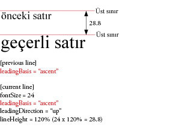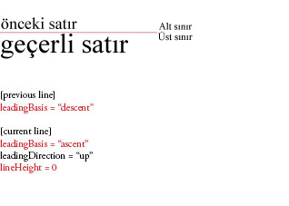
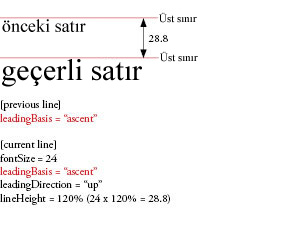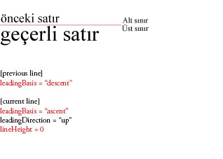
Satır Aralığı Yönü:
 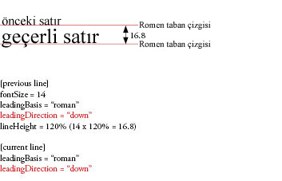
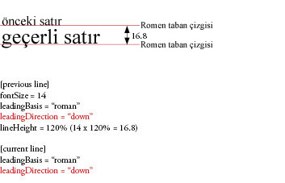 
Geçerli değerler LeadingModel.ROMAN_UP, LeadingModel.IDEOGRAPHIC_TOP_UP, LeadingModel.IDEOGRAPHIC_CENTER_UP, LeadingModel.IDEOGRAPHIC_TOP_DOWN, LeadingModel.IDEOGRAPHIC_CENTER_DOWN, LeadingModel.APPROXIMATE_TEXT_FIELD, LeadingModel.ASCENT_DESCENT_UP, LeadingModel.BOX, LeadingModel.AUTO, FormatValue.INHERIT değerleridir.
Varsayılan değer, ayarlanmamış görünen tanımsız değerdir.
Bu özellik, basamaklama sırasında tanımlanmazsa, değerini bir üst öğeden miras alır. Bu özelliği herhangi bir üst öğe ayarlamadıysa, bir LeadingModel.AUTO değerine sahip olacaktır.
Uygulama
public function get leadingModel():*Atar
RangeError — ayarlanan değer bu özelliğin erişiminde olmadığında
|
İlgili API Öğeleri
ligatureLevel | özellik |
ligatureLevel:* [salt okunur] | Dil Sürümü: | ActionScript 3.0 |
| Çalışma Zamanı Sürümleri: | Flash Player 10, AIR 1.5 |
Fontta tanımlanan bitişik harflerin hangilerinin metinde kullanılabileceğini kontrol eder. Bu ayarların her biri için görüntülenen bitişik harfler, fonta bağlıdır. İki veya daha fazla harf formunun tek bir glif olarak birleşmesiyle birleşik harf oluşur. Birleşik harfler genellikle ortak bileşenleri paylaşan ardışık karakterlerin yerini alır, örn. 'fi', 'fl' veya 'ae' harf çiftleri. Bunlar hem Latince olan hem de Latince olmayan karakter kümeleriyle kullanılır. Bitişik harfler LigatureLevel sınıfının değerleri tarafından etkinleştirilir - MINIMUM, COMMON, UNCOMMON, ve EXOTIC - artırıcıdır. Her değer yeni bir bitişik harfler kümesini etkinleştirir ancak önceki türlerden olanları da içerir.
Not: Arapça veya Süryanice fontlarla çalışılırken, ligatureLevel öğesi MINIMUM değerine veya daha yüksek bir değere ayarlanmalıdır.
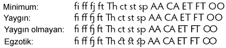
Geçerli değerler LigatureLevel.MINIMUM, LigatureLevel.COMMON, LigatureLevel.UNCOMMON, LigatureLevel.EXOTIC, FormatValue.INHERIT değerleridir.
Varsayılan değer, ayarlanmamış görünen tanımsız değerdir.
Bu özellik, basamaklama sırasında tanımlanmazsa, değerini bir üst öğeden miras alır. Bu özelliği herhangi bir üst öğe ayarlamadıysa, bir LigatureLevel.COMMON değerine sahip olacaktır.
Uygulama
public function get ligatureLevel():*Atar
RangeError — ayarlanan değer bu özelliğin erişiminde olmadığında
|
İlgili API Öğeleri
lineBreak | özellik |
lineBreak:* [salt okunur] | Dil Sürümü: | ActionScript 3.0 |
| Çalışma Zamanı Sürümleri: | Flash Player 10, AIR 1.5 |
Kabın içindeki sözcük sarmayı kontrol eder (basamaklama sırasında tanımlanmazsa varsayılan değeri benimser). Kaptaki metin kabın genişliğine sığacak şekilde (LineBreak.TO_FIT) veya yalnızca açık satır başı veya satır besleme karakterlerinde kesilecek şekilde (LineBreak.EXPLICIT) ayarlanabilir.
Geçerli değerler LineBreak.EXPLICIT, LineBreak.TO_FIT, FormatValue.INHERIT değerleridir.
Varsayılan değer, ayarlanmamış görünen tanımsız değerdir.
Basamaklama sırasında tanımlanmazsa bu özellik bir LineBreak.TO_FIT değerine sahip olacaktır.
Uygulama
public function get lineBreak():*Atar
RangeError — ayarlanan değer bu özelliğin erişiminde olmadığında
|
İlgili API Öğeleri
lineHeight | özellik |
lineHeight:* [salt okunur] | Dil Sürümü: | ActionScript 3.0 |
| Çalışma Zamanı Sürümleri: | Flash Player 10, AIR 1.5 |
Metin için satır aralığı kontrolleri. Önceki veya sonraki satırın taban çizgisinden (LeadingModel temel alınarak) geçerli satırın taban çizgisine kadar olan mesafe, satırdaki herhangi bir karaktere uygulanan maksimum satır aralığı miktarına eşittir. Bu bir sayı veya yüzde değeri olabilir. Bir yüzde değeri belirtiyorsanız, %140 gibi bir dize değeri girin.
 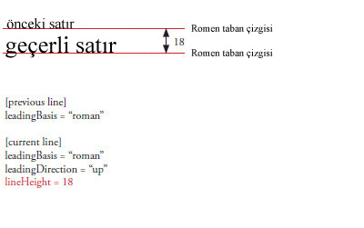
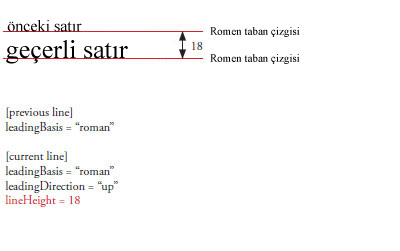
Sayı şeklindeki geçerli değerler, -720 ile 720 arasındadır.
Yüzde şeklindeki geçerli değerler, %-1000 ile %1000 arasında olan sayılardır.
Geçerli değerler FormatValue.INHERIT değerini içerir.
Varsayılan değer, ayarlanmamış görünen tanımsız değerdir.
Bu özellik, basamaklama sırasında tanımlanmazsa, değerini bir üst öğeden miras alır. Bu özelliği herhangi bir üst öğe ayarlamadıysa, bir %120 değerine sahip olacaktır.
Uygulama
public function get lineHeight():*Atar
RangeError — ayarlanan değer bu özelliğin erişiminde olmadığında
|
lineThrough | özellik |
lineThrough:* [salt okunur] | Dil Sürümü: | ActionScript 3.0 |
| Çalışma Zamanı Sürümleri: | Flash Player 10, AIR 1.5 |
True ise, üst çizgi uygular, metnin ortasına çizilen bir çizgi.
Varsayılan değerler true, false ve FormatValue.INHERIT değerleridir.
Varsayılan değer, ayarlanmamış görünen tanımsız değerdir.
Bu özellik, basamaklama sırasında tanımlanmazsa, değerini bir üst öğeden miras alır. Bu özelliği herhangi bir üst öğe ayarlamadıysa, bir false değerine sahip olacaktır.
Uygulama
public function get lineThrough():*Atar
RangeError — ayarlanan değer bu özelliğin erişiminde olmadığında
|
linkActiveFormat | özellik |
linkActiveFormat:* [salt okunur] | Dil Sürümü: | ActionScript 3.0 |
| Çalışma Zamanı Sürümleri: | Flash Player 10, AIR 1.5 |
Normal durumdaki bağlantılar için kullanılan biçimlendirme niteliklerini tanımlar. Bu değer hiyerarşide aşağı doğru basamaklanır ve alt öğe olan herhangi bir bağlantıya uygulanır. Bir ITextLayoutFormat öğesi olan inherit öğesini kabul eder veya anahtar ve değere sahip bir nesne dizisini bir TextLayoutFormat öğesine üye olarak dönüştürür.
Geçerli değerler FormatValue.INHERIT değerini içerir.
Varsayılan değer, ayarlanmamış görünen tanımsız değerdir.
Bu özellik, basamaklama sırasında tanımlanmazsa, değerini bir üst öğeden miras alır. Bu özelliği herhangi bir üst öğe ayarlamadıysa, bir null değerine sahip olacaktır.
Uygulama
public function get linkActiveFormat():*Atar
RangeError — ayarlanan değer bu özelliğin erişiminde olmadığında
|
linkHoverFormat | özellik |
linkHoverFormat:* [salt okunur] | Dil Sürümü: | ActionScript 3.0 |
| Çalışma Zamanı Sürümleri: | Flash Player 10, AIR 1.5 |
Fare bir bağlantının sınırları dahilinde olduğunda (üzerine geldiğinde), üzerine gelinen bağlantılar için kullanılan biçimlendirme niteliklerini tanımlar. Bu değer hiyerarşide aşağı doğru basamaklanır ve alt öğe olan herhangi bir bağlantıya uygulanır. Bir ITextLayoutFormat öğesi olan inherit öğesini kabul eder veya anahtar ve değere sahip bir nesne dizisini bir TextLayoutFormat öğesine üye olarak dönüştürür.
Geçerli değerler FormatValue.INHERIT değerini içerir.
Varsayılan değer, ayarlanmamış görünen tanımsız değerdir.
Bu özellik, basamaklama sırasında tanımlanmazsa, değerini bir üst öğeden miras alır. Bu özelliği herhangi bir üst öğe ayarlamadıysa, bir null değerine sahip olacaktır.
Uygulama
public function get linkHoverFormat():*Atar
RangeError — ayarlanan değer bu özelliğin erişiminde olmadığında
|
linkNormalFormat | özellik |
linkNormalFormat:* [salt okunur] | Dil Sürümü: | ActionScript 3.0 |
| Çalışma Zamanı Sürümleri: | Flash Player 10, AIR 1.5 |
Normal durumdaki bağlantılar için kullanılan biçimlendirme niteliklerini tanımlar. Bu değer hiyerarşide aşağı doğru basamaklanır ve alt öğe olan herhangi bir bağlantıya uygulanır. Bir ITextLayoutFormat öğesi olan inherit öğesini kabul eder veya anahtar ve değere sahip bir nesne dizisini bir TextLayoutFormat öğesine üye olarak dönüştürür.
Geçerli değerler FormatValue.INHERIT değerini içerir.
Varsayılan değer, ayarlanmamış görünen tanımsız değerdir.
Bu özellik, basamaklama sırasında tanımlanmazsa, değerini bir üst öğeden miras alır. Bu özelliği herhangi bir üst öğe ayarlamadıysa, bir null değerine sahip olacaktır.
Uygulama
public function get linkNormalFormat():*Atar
RangeError — ayarlanan değer bu özelliğin erişiminde olmadığında
|
listAutoPadding | özellik |
listAutoPadding:* [salt okunur] | Dil Sürümü: | ActionScript 3.0 |
| Çalışma Zamanı Sürümleri: | Flash Player 10, AIR 1.5 |
Bu, listelerin başlangıç kenarı için, listenin o tarafındaki dolgu değeri auto olduğunda otomatik girinti belirtir.
Geçerli değerler, -1000 ile 1000 arasındaki sayılar ve FormatValue.INHERIT değeridir.
Varsayılan değer, ayarlanmamış görünen tanımsız değerdir.
Bu özellik, basamaklama sırasında tanımlanmazsa, değerini bir üst öğeden miras alır. Bu özelliği herhangi bir üst öğe ayarlamadıysa, bir 40 değerine sahip olacaktır.
Uygulama
public function get listAutoPadding():*Atar
RangeError — ayarlanan değer bu özelliğin erişiminde olmadığında
|
listMarkerFormat | özellik |
listMarkerFormat:* [salt okunur] | Dil Sürümü: | ActionScript 3.0 |
| Çalışma Zamanı Sürümleri: | Flash Player 10, AIR 1.5 |
Biçimlendirme nitelikleri listesi işaretlerini tanımlar. Bu değer hiyerarşide aşağı doğru basamaklanır ve alt öğe olan herhangi bir bağlantıya uygulanır. Bir IListMarkerFormat öğesi olan inherit öğesini kabul eder veya anahtar ve değere sahip bir nesne dizisini bir ListMarkerFormat öğesine üye olarak dönüştürür.
Geçerli değerler FormatValue.INHERIT değerini içerir.
Varsayılan değer, ayarlanmamış görünen tanımsız değerdir.
Bu özellik, basamaklama sırasında tanımlanmazsa, değerini bir üst öğeden miras alır. Bu özelliği herhangi bir üst öğe ayarlamadıysa, bir null değerine sahip olacaktır.
Uygulama
public function get listMarkerFormat():*Atar
RangeError — ayarlanan değer bu özelliğin erişiminde olmadığında
|
listStylePosition | özellik |
listStylePosition:* [salt okunur] | Dil Sürümü: | ActionScript 3.0 |
| Çalışma Zamanı Sürümleri: | Flash Player 10, AIR 1.5 |
Geçerli değerler ListStylePosition.INSIDE, ListStylePosition.OUTSIDE, FormatValue.INHERIT değerleridir.
Varsayılan değer, ayarlanmamış görünen tanımsız değerdir.
Bu özellik, basamaklama sırasında tanımlanmazsa, değerini bir üst öğeden miras alır. Bu özelliği herhangi bir üst öğe ayarlamadıysa, bir ListStylePosition.OUTSIDE değerine sahip olacaktır.
Uygulama
public function get listStylePosition():*Atar
RangeError — ayarlanan değer bu özelliğin erişiminde olmadığında
|
İlgili API Öğeleri
listStyleType | özellik |
listStyleType:* [salt okunur] | Dil Sürümü: | ActionScript 3.0 |
| Çalışma Zamanı Sürümleri: | Flash Player 10, AIR 1.5 |
Geçerli değerler ListStyleType.UPPER_ALPHA, ListStyleType.LOWER_ALPHA, ListStyleType.UPPER_ROMAN, ListStyleType.LOWER_ROMAN, ListStyleType.NONE, ListStyleType.DISC, ListStyleType.CIRCLE, ListStyleType.SQUARE, ListStyleType.BOX, ListStyleType.CHECK, ListStyleType.DIAMOND, ListStyleType.HYPHEN, ListStyleType.ARABIC_INDIC, ListStyleType.BENGALI, ListStyleType.DECIMAL, ListStyleType.DECIMAL_LEADING_ZERO, ListStyleType.DEVANAGARI, ListStyleType.GUJARATI, ListStyleType.GURMUKHI, ListStyleType.KANNADA, ListStyleType.PERSIAN, ListStyleType.THAI, ListStyleType.URDU, ListStyleType.CJK_EARTHLY_BRANCH, ListStyleType.CJK_HEAVENLY_STEM, ListStyleType.HANGUL, ListStyleType.HANGUL_CONSTANT, ListStyleType.HIRAGANA, ListStyleType.HIRAGANA_IROHA, ListStyleType.KATAKANA, ListStyleType.KATAKANA_IROHA, ListStyleType.LOWER_ALPHA, ListStyleType.LOWER_GREEK, ListStyleType.LOWER_LATIN, ListStyleType.UPPER_ALPHA, ListStyleType.UPPER_GREEK, ListStyleType.UPPER_LATIN, FormatValue.INHERIT değerleridir.
Varsayılan değer, ayarlanmamış görünen tanımsız değerdir.
Bu özellik, basamaklama sırasında tanımlanmazsa, değerini bir üst öğeden miras alır. Bu özelliği herhangi bir üst öğe ayarlamadıysa, bir ListStyleType.DISC değerine sahip olacaktır.
Uygulama
public function get listStyleType():*Atar
RangeError — ayarlanan değer bu özelliğin erişiminde olmadığında
|
İlgili API Öğeleri
locale | özellik |
locale:* [salt okunur] | Dil Sürümü: | ActionScript 3.0 |
| Çalışma Zamanı Sürümleri: | Flash Player 10, AIR 1.5 |
Metnin yerel ayarı. Büyük/küçük harf dönüşümlerini ve şekillendirmeyi denetler. 35. Unicode Teknik Standardında açıklandığı gibi standart yerel ağ tanımlayıcıları kullanılır. Örneğin, en, en_US ve en-US İngilizce'yken, ja Japonca'dır.
Varsayılan değer, ayarlanmamış görünen tanımsız değerdir.
Bu özellik, basamaklama sırasında tanımlanmazsa, değerini bir üst öğeden miras alır. Bu özelliği herhangi bir üst öğe ayarlamadıysa, bir tr değerine sahip olacaktır.
Uygulama
public function get locale():*Atar
RangeError — ayarlanan değer bu özelliğin erişiminde olmadığında
|
paddingBottom | özellik |
paddingBottom:* [salt okunur] | Dil Sürümü: | ActionScript 3.0 |
| Çalışma Zamanı Sürümleri: | Flash Player 10, AIR 1.5 |
Piksel cinsinden alt daraltma. 45'lik bir başlangıç tarafı dolgusu alan listeler dışında auto değerinin varsayılanı sıfırdır. (basamaklama sırasında tanımsızsa varsayılan değeri alır). Kabın alt kenarı ile metin arasındaki boşluk. Değer bir Sayı veya auto değeridir.
Birden çok sütun içeren kaydırılabilir kaplardaki yatay metinlerde, birinci ve birinciden sonraki sütunlar kabın altında dolguyu boşluk olarak gösterir, ancak son sütunda metin tamamen sığmazsa, dolguyu görmek için kaydırma yapmanız gerekebilir.
Dize olarak geçerli değerler şunlardır: FormatValue.AUTO, FormatValue.INHERIT ve -8000 ile 8000 arasındaki sayılar.
Varsayılan değer, ayarlanmamış görünen tanımsız değerdir.
Basamaklama sırasında tanımsızsa bu özellik FormatValue.AUTO değerine sahip olacaktır.
Uygulama
public function get paddingBottom():*Atar
RangeError — ayarlanan değer bu özelliğin erişiminde olmadığında
|
İlgili API Öğeleri
paddingLeft | özellik |
paddingLeft:* [salt okunur] | Dil Sürümü: | ActionScript 3.0 |
| Çalışma Zamanı Sürümleri: | Flash Player 10, AIR 1.5 |
Piksel cinsinden sol daraltma. 45'lik bir başlangıç tarafı dolgusu alan listeler dışında auto değerinin varsayılanı sıfırdır. (basamaklama sırasında tanımsızsa varsayılan değeri alır). Kabın sol kenarı ile metin arasındaki boşluk. Değer bir Sayı veya auto değeridir.
Birden çok sütun içeren kaydırılabilir kaplardaki dikey metinlerde, birinci ve birinciden sonraki sütunlar kabın sonunda dolguyu boşluk olarak gösterir, ancak son sütunda metin tamamen sığmazsa, dolguyu görmek için kaydırma yapmanız gerekebilir.
Dize olarak geçerli değerler şunlardır: FormatValue.AUTO, FormatValue.INHERIT ve -8000 ile 8000 arasındaki sayılar.
Varsayılan değer, ayarlanmamış görünen tanımsız değerdir.
Basamaklama sırasında tanımsızsa bu özellik FormatValue.AUTO değerine sahip olacaktır.
Uygulama
public function get paddingLeft():*Atar
RangeError — ayarlanan değer bu özelliğin erişiminde olmadığında
|
İlgili API Öğeleri
paddingRight | özellik |
paddingRight:* [salt okunur] | Dil Sürümü: | ActionScript 3.0 |
| Çalışma Zamanı Sürümleri: | Flash Player 10, AIR 1.5 |
Piksel cinsinden sağ daraltma. 45'lik bir başlangıç tarafı dolgusu alan listeler dışında auto değerinin varsayılanı sıfırdır. (basamaklama sırasında tanımsızsa varsayılan değeri alır). Kabın sağ kenarı ile metin arasındaki boşluk. Değer bir Sayı veya auto değeridir.
Dize olarak geçerli değerler şunlardır: FormatValue.AUTO, FormatValue.INHERIT ve -8000 ile 8000 arasındaki sayılar.
Varsayılan değer, ayarlanmamış görünen tanımsız değerdir.
Basamaklama sırasında tanımsızsa bu özellik FormatValue.AUTO değerine sahip olacaktır.
Uygulama
public function get paddingRight():*Atar
RangeError — ayarlanan değer bu özelliğin erişiminde olmadığında
|
İlgili API Öğeleri
paddingTop | özellik |
paddingTop:* [salt okunur] | Dil Sürümü: | ActionScript 3.0 |
| Çalışma Zamanı Sürümleri: | Flash Player 10, AIR 1.5 |
Piksel cinsinden üst daraltma. 45'lik bir başlangıç tarafı dolgusu alan listeler dışında auto değerinin varsayılanı sıfırdır. (basamaklama sırasında tanımsızsa varsayılan değeri alır). Kabın üst kenarı ile metin arasındaki boşluk. Değer bir Sayı veya auto değeridir.
Dize olarak geçerli değerler şunlardır: FormatValue.AUTO, FormatValue.INHERIT ve -8000 ile 8000 arasındaki sayılar.
Varsayılan değer, ayarlanmamış görünen tanımsız değerdir.
Basamaklama sırasında tanımsızsa bu özellik FormatValue.AUTO değerine sahip olacaktır.
Uygulama
public function get paddingTop():*Atar
RangeError — ayarlanan değer bu özelliğin erişiminde olmadığında
|
İlgili API Öğeleri
paragraphEndIndent | özellik |
paragraphEndIndent:* [salt okunur] | Dil Sürümü: | ActionScript 3.0 |
| Çalışma Zamanı Sürümleri: | Flash Player 10, AIR 1.5 |
Paragrafın uç kenarına uygulanacak girinti miktarını piksel cinsinden belirten bir sayı. Soldan sağa olan metinlerde sağ kenara ve sağdan sola olan metinlerde sol kenara başvurur.
Geçerli değerler, 0 ile 8000 sayılar ve FormatValue.INHERIT değeridir.
Varsayılan değer, ayarlanmamış görünen tanımsız değerdir.
Bu özellik, basamaklama sırasında tanımlanmazsa, değerini bir üst öğeden miras alır. Bu özelliği herhangi bir üst öğe ayarlamadıysa, bir 0 değerine sahip olacaktır.
Uygulama
public function get paragraphEndIndent():*Atar
RangeError — ayarlanan değer bu özelliğin erişiminde olmadığında
|
paragraphSpaceAfter | özellik |
paragraphSpaceAfter:* [salt okunur] | Dil Sürümü: | ActionScript 3.0 |
| Çalışma Zamanı Sürümleri: | Flash Player 10, AIR 1.5 |
Paragraftan sonra bırakılacak piksel cinsinden boşluk miktarını belirten bir Number. paragraphSpaceBefore öğesi ile art arda daraltır.
Geçerli değerler, 0 ile 8000 sayılar ve FormatValue.INHERIT değeridir.
Varsayılan değer, ayarlanmamış görünen tanımsız değerdir.
Bu özellik, basamaklama sırasında tanımlanmazsa, değerini bir üst öğeden miras alır. Bu özelliği herhangi bir üst öğe ayarlamadıysa, bir 0 değerine sahip olacaktır.
Uygulama
public function get paragraphSpaceAfter():*Atar
RangeError — ayarlanan değer bu özelliğin erişiminde olmadığında
|
paragraphSpaceBefore | özellik |
paragraphSpaceBefore:* [salt okunur] | Dil Sürümü: | ActionScript 3.0 |
| Çalışma Zamanı Sürümleri: | Flash Player 10, AIR 1.5 |
Paragraftan önce bırakılacak piksel cinsinden boşluk miktarını belirten bir Number. paragraphSpaceAfter öğesi ile art arda daraltır.
Geçerli değerler, 0 ile 8000 sayılar ve FormatValue.INHERIT değeridir.
Varsayılan değer, ayarlanmamış görünen tanımsız değerdir.
Bu özellik, basamaklama sırasında tanımlanmazsa, değerini bir üst öğeden miras alır. Bu özelliği herhangi bir üst öğe ayarlamadıysa, bir 0 değerine sahip olacaktır.
Uygulama
public function get paragraphSpaceBefore():*Atar
RangeError — ayarlanan değer bu özelliğin erişiminde olmadığında
|
paragraphStartIndent | özellik |
paragraphStartIndent:* [salt okunur] | Dil Sürümü: | ActionScript 3.0 |
| Çalışma Zamanı Sürümleri: | Flash Player 10, AIR 1.5 |
Paragrafın uç kenarına uygulanacak girinti miktarını piksel cinsinden belirten bir Sayı. Soldan sağa olan metinlerde sol kenara ve sağdan sola olan metinlerde sağ kenara başvurur.
Geçerli değerler, 0 ile 8000 sayılar ve FormatValue.INHERIT değeridir.
Varsayılan değer, ayarlanmamış görünen tanımsız değerdir.
Bu özellik, basamaklama sırasında tanımlanmazsa, değerini bir üst öğeden miras alır. Bu özelliği herhangi bir üst öğe ayarlamadıysa, bir 0 değerine sahip olacaktır.
Uygulama
public function get paragraphStartIndent():*Atar
RangeError — ayarlanan değer bu özelliğin erişiminde olmadığında
|
renderingMode | özellik |
renderingMode:* [salt okunur] | Dil Sürümü: | ActionScript 3.0 |
| Çalışma Zamanı Sürümleri: | Flash Player 10, AIR 1.5 |
Bu metin için kullanılan oluşturma modu. Gömülü fontlara uygulanır (fontLookup özelliği FontLookup.EMBEDDED_CFF değerine ayarlanır).
Geçerli değerler RenderingMode.NORMAL, RenderingMode.CFF, FormatValue.INHERIT değerleridir.
Varsayılan değer, ayarlanmamış görünen tanımsız değerdir.
Bu özellik, basamaklama sırasında tanımlanmazsa, değerini bir üst öğeden miras alır. Bu özelliği herhangi bir üst öğe ayarlamadıysa, bir RenderingMode.CFF değerine sahip olacaktır.
Uygulama
public function get renderingMode():*Atar
RangeError — ayarlanan değer bu özelliğin erişiminde olmadığında
|
İlgili API Öğeleri
styleName | özellik |
styleName:* [salt okunur] | Dil Sürümü: | ActionScript 3.0 |
| Çalışma Zamanı Sürümleri: | Flash Player 10, AIR 1.5 |
Öğeye tanımlayıcı bir sınıf atar ve böylece styleName öğesine başvurularak öğe için bir stil ayarlanmasını olanaklı kılar.
Varsayılan değer, ayarlanmamış görünen tanımsız değerdir.
Basamaklama sırasında tanımlanmazsa bu özellik bir null değerine sahip olacaktır.
Uygulama
public function get styleName():*Atar
RangeError — ayarlanan değer bu özelliğin erişiminde olmadığında
|
tabStops | özellik |
tabStops:* [salt okunur] | Dil Sürümü: | ActionScript 3.0 |
| Çalışma Zamanı Sürümleri: | Flash Player 10, AIR 1.5 |
Paragrafla ilişkili sekme duraklarını belirtir. Ayarlayıcılar bir TabStopFormat dizisi, bir yoğunlaştırılmış dize temsili, tanımsız veya FormatValue.INHERIT öğesi alabilir. Yoğunlaştırılmış dize temsili her zaman bir TabStopFormat dizisine dönüştürülür.
Dize tabanlı format, her sekme durağının bir veya birkaç boşlukla ayrıldığı bir sekme durakları listesidir.
Sekme durağı şu formu alır: <hizalama türü><hizalama konumu>|<hizalama simgesi>.
Hizalama türü tek bir karakter olup S, E, C veya D (ya da küçük harf karşılıkları) olabilir. Başlangıç için S veya s, bitiş için E ya da e, merkez için C veya c, ondalık için D ya da d. Hizalama türü isteğe bağlıdır ve belirtilmezse varsayılan olarak S değerini alır.
Hizalama konumu bir Number değeridir ve Number değerleri için FXG spesifikasyonuna göre belirtilir (ondalık veya bilimsel gösterim). Hizalama konumu gereklidir.
Dikey çubuk, hizalama konumunu hizalama simgesinden ayırmak için kullanılır ve yalnızca hizalama simgesi varsa bulunur.
Hizalama simgesi, hizalama türü D olduğunda isteğe bağlıdır ve hizalama türü D dışında herhangi bir şey olduğunda ise bulunmaz. Hizalama simgesi, sekme durağını bitiren boşlukla sonlandırılmış herhangi bir karakter sırası olabilir (son sekme durağı için, sonlandıran boşluk isteğe bağlıdır; hizalama simgesinin sonu ima edilir). Boşluk, ters eğik çizgiyle işaretlendiğinde (\ ), hizalama simgesinin bir parçası olabilir. Ters eğik çizgi, başka bir ters eğik çizgiyle işaretlendiğinde (\\), hizalama simgesinin bir parçası olabilir. Hizalama türü D ise ve hizalama işareti belirtilmediyse, varsayılan null değerini alacaktır.
Varsayılan değer, ayarlanmamış görünen tanımsız değerdir.
Bu özellik, basamaklama sırasında tanımlanmazsa, değerini bir üst öğeden miras alır. Bu özelliği herhangi bir üst öğe ayarlamadıysa, bir null değerine sahip olacaktır.
Uygulama
public function get tabStops():*Atar
RangeError — ayarlanan değer bu özelliğin erişiminde olmadığında
|
İlgili API Öğeleri
textAlign | özellik |
textAlign:* [salt okunur] | Dil Sürümü: | ActionScript 3.0 |
| Çalışma Zamanı Sürümleri: | Flash Player 10, AIR 1.5 |
Kapla ilişkili paragraftaki satırların hizalaması. TextAlign.LEFT satırları kabın sol kenarı doğrultusunda hizalar. TextAlign.RIGHT sağ kenarda hizalar. TextAlign.CENTER sol ve sağ kenarlara eşit uzaklıktaki satırı konumlandırır. TextAlign.JUSTIFY satırları boşluğu dolduracak şekilde dağıtır. TextAlign.START soldan sağa olan metinlerde sola ayarlamak ve sağdan sola olan metinlerde sağa ayarlamaya eşdeğerdir. TextAlign.END soldan sağa olan metinlerde sağa ayarlamak ve sağdan sola olan metinlerde sola ayarlamaya eşdeğerdir.
Geçerli değerler TextAlign.LEFT, TextAlign.RIGHT, TextAlign.CENTER, TextAlign.JUSTIFY, TextAlign.START, TextAlign.END, FormatValue.INHERIT değerleridir.
Varsayılan değer, ayarlanmamış görünen tanımsız değerdir.
Bu özellik, basamaklama sırasında tanımlanmazsa, değerini bir üst öğeden miras alır. Bu özelliği herhangi bir üst öğe ayarlamadıysa, bir TextAlign.START değerine sahip olacaktır.
Uygulama
public function get textAlign():*Atar
RangeError — ayarlanan değer bu özelliğin erişiminde olmadığında
|
İlgili API Öğeleri
textAlignLast | özellik |
textAlignLast:* [salt okunur] | Dil Sürümü: | ActionScript 3.0 |
| Çalışma Zamanı Sürümleri: | Flash Player 10, AIR 1.5 |
Yaslanan metindeki kapla ilişkili paragraftaki son (veya tek) satırın hizalaması. textAlign öğesi TextAlign.JUSTIFY ayarındaysa, textAlignLast son satırın (veya bu tek satırlık bir bloksa tek satırın) nasıl hizalanacağını belirtir. Değerler textAlign öğesine benzer.
Geçerli değerler TextAlign.LEFT, TextAlign.RIGHT, TextAlign.CENTER, TextAlign.JUSTIFY, TextAlign.START, TextAlign.END, FormatValue.INHERIT değerleridir.
Varsayılan değer, ayarlanmamış görünen tanımsız değerdir.
Bu özellik, basamaklama sırasında tanımlanmazsa, değerini bir üst öğeden miras alır. Bu özelliği herhangi bir üst öğe ayarlamadıysa, bir TextAlign.START değerine sahip olacaktır.
Uygulama
public function get textAlignLast():*Atar
RangeError — ayarlanan değer bu özelliğin erişiminde olmadığında
|
İlgili API Öğeleri
textAlpha | özellik |
textAlpha:* [salt okunur] | Dil Sürümü: | ActionScript 3.0 |
| Çalışma Zamanı Sürümleri: | Flash Player 10, AIR 1.5 |
Metine ilişkin alfa (saydamlık) değeri. 0 değeri tamamen saydamlığı ifade ederken, 1 değeri tamamen opaklığı ifade eder. textAlpha özelliği 0 olarak ayarlanmış görüntüleme nesneleri görünmez olsa da etkindir.
Geçerli değerler, 0 ile 1 arasında bir değer ve FormatValue.INHERIT değeridir.
Varsayılan değer, ayarlanmamış görünen tanımsız değerdir.
Bu özellik, basamaklama sırasında tanımlanmazsa, değerini bir üst öğeden miras alır. Bu özelliği herhangi bir üst öğe ayarlamadıysa, bir 1 değerine sahip olacaktır.
Uygulama
public function get textAlpha():*Atar
RangeError — ayarlanan değer bu özelliğin erişiminde olmadığında
|
textDecoration | özellik |
textDecoration:* [salt okunur] | Dil Sürümü: | ActionScript 3.0 |
| Çalışma Zamanı Sürümleri: | Flash Player 10, AIR 1.5 |
Metin üzerindeki dekorasyon. Alt çizgi uygulamak için kullanılır; varsayılan none değeridir.
Geçerli değerler TextDecoration.NONE, TextDecoration.UNDERLINE, FormatValue.INHERIT değerleridir.
Varsayılan değer, ayarlanmamış görünen tanımsız değerdir.
Bu özellik, basamaklama sırasında tanımlanmazsa, değerini bir üst öğeden miras alır. Bu özelliği herhangi bir üst öğe ayarlamadıysa, bir TextDecoration.NONE değerine sahip olacaktır.
Uygulama
public function get textDecoration():*Atar
RangeError — ayarlanan değer bu özelliğin erişiminde olmadığında
|
İlgili API Öğeleri
textIndent | özellik |
textIndent:* [salt okunur] | Dil Sürümü: | ActionScript 3.0 |
| Çalışma Zamanı Sürümleri: | Flash Player 10, AIR 1.5 |
Paragrafın ilk satırına uygulanacak girinti miktarını piksel cinsinden belirten bir Sayı. Negatif girinti, satırın kenar boşluğuna ve büyük olasılıkla kabın dışına itilmesine neden olur.
Geçerli değerler, -8000 ile 8000 arasındaki sayılar ve FormatValue.INHERIT değeridir.
Varsayılan değer, ayarlanmamış görünen tanımsız değerdir.
Bu özellik, basamaklama sırasında tanımlanmazsa, değerini bir üst öğeden miras alır. Bu özelliği herhangi bir üst öğe ayarlamadıysa, bir 0 değerine sahip olacaktır.
Uygulama
public function get textIndent():*Atar
RangeError — ayarlanan değer bu özelliğin erişiminde olmadığında
|
textJustify | özellik |
textJustify:* [salt okunur] | Dil Sürümü: | ActionScript 3.0 |
| Çalışma Zamanı Sürümleri: | Flash Player 10, AIR 1.5 |
Metni yaslamak için seçenekler belirler. Varsayılan değer TextJustify.INTER_WORD olup bu, yaslamada boşluk karakterlerine fazladan boşluk eklendiği anlamına gelir. TextJustify.DISTRIBUTE öğesi, boşluk karakterlerine ve ayrı karakterlere ek boşluk ekler. Yalnızca JustificationRule.SPACE öğesinin bir justificationRule değeriyle birlikte kullanılır.
Geçerli değerler TextJustify.INTER_WORD, TextJustify.DISTRIBUTE, FormatValue.INHERIT değerleridir.
Varsayılan değer, ayarlanmamış görünen tanımsız değerdir.
Bu özellik, basamaklama sırasında tanımlanmazsa, değerini bir üst öğeden miras alır. Bu özelliği herhangi bir üst öğe ayarlamadıysa, bir TextJustify.INTER_WORD değerine sahip olacaktır.
Uygulama
public function get textJustify():*Atar
RangeError — ayarlanan değer bu özelliğin erişiminde olmadığında
|
İlgili API Öğeleri
textRotation | özellik |
textRotation:* [salt okunur] | Dil Sürümü: | ActionScript 3.0 |
| Çalışma Zamanı Sürümleri: | Flash Player 10, AIR 1.5 |
Bu metni döndürecek derece sayısını belirler.
Geçerli değerler TextRotation.ROTATE_0, TextRotation.ROTATE_180, TextRotation.ROTATE_270, TextRotation.ROTATE_90, TextRotation.AUTO, FormatValue.INHERIT değerleridir.
Varsayılan değer, ayarlanmamış görünen tanımsız değerdir.
Bu özellik, basamaklama sırasında tanımlanmazsa, değerini bir üst öğeden miras alır. Bu özelliği herhangi bir üst öğe ayarlamadıysa, bir TextRotation.AUTO değerine sahip olacaktır.
Uygulama
public function get textRotation():*Atar
RangeError — ayarlanan değer bu özelliğin erişiminde olmadığında
|
İlgili API Öğeleri
trackingLeft | özellik |
trackingLeft:* [salt okunur] | Dil Sürümü: | ActionScript 3.0 |
| Çalışma Zamanı Sürümleri: | Flash Player 10, AIR 1.5 |
Karakterin soluna uygulanacak izleme (manuel karakter aralığı) miktarını piksel cinsinden belirten sayı (veya fontSize yüzdesi, %120 gibi). Karakter aralığı etkinleştirilirse, fontun karakter aralığı tablosundaki değerlere trackingLeft değeri eklenir. Karakter aralığı devre dışı bırakılırsa, elle karakter aralığı değeri olarak trackingLeft değeri kullanılır. Hem pozitif hem de negatif değerleri destekler.
Sayı şeklindeki geçerli değerler, -1000 ile 1000 arasındadır.
Yüzde şeklindeki geçerli değerler, %-1000 ile %1000 arasında olan sayılardır.
Geçerli değerler FormatValue.INHERIT değerini içerir.
Varsayılan değer, ayarlanmamış görünen tanımsız değerdir.
Bu özellik, basamaklama sırasında tanımlanmazsa, değerini bir üst öğeden miras alır. Bu özelliği herhangi bir üst öğe ayarlamadıysa, bir 0 değerine sahip olacaktır.
Uygulama
public function get trackingLeft():*Atar
RangeError — ayarlanan değer bu özelliğin erişiminde olmadığında
|
trackingRight | özellik |
trackingRight:* [salt okunur] | Dil Sürümü: | ActionScript 3.0 |
| Çalışma Zamanı Sürümleri: | Flash Player 10, AIR 1.5 |
Karakterin sağına uygulanacak izleme (manuel karakter aralığı) miktarını piksel cinsinden belirten sayı (veya fontSize yüzdesi, %120 gibi). Karakter aralığı etkinleştirilirse, fontun karakter aralığı tablosundaki değerlere trackingRight değeri eklenir. Karakter aralığı devre dışı bırakılırsa, elle karakter aralığı değeri olarak trackingRight değeri kullanılır. Hem pozitif hem de negatif değerleri destekler.
Sayı şeklindeki geçerli değerler, -1000 ile 1000 arasındadır.
Yüzde şeklindeki geçerli değerler, %-1000 ile %1000 arasında olan sayılardır.
Geçerli değerler FormatValue.INHERIT değerini içerir.
Varsayılan değer, ayarlanmamış görünen tanımsız değerdir.
Bu özellik, basamaklama sırasında tanımlanmazsa, değerini bir üst öğeden miras alır. Bu özelliği herhangi bir üst öğe ayarlamadıysa, bir 0 değerine sahip olacaktır.
Uygulama
public function get trackingRight():*Atar
RangeError — ayarlanan değer bu özelliğin erişiminde olmadığında
|
typographicCase | özellik |
typographicCase:* [salt okunur] | Dil Sürümü: | ActionScript 3.0 |
| Çalışma Zamanı Sürümleri: | Flash Player 10, AIR 1.5 |
Bu metin için kullanılan basamak büyük/küçük harf türü. Aşağıda bazı örneklere yer verilmiştir:
Geçerli değerler TLFTypographicCase.DEFAULT, TLFTypographicCase.CAPS_TO_SMALL_CAPS, TLFTypographicCase.UPPERCASE, TLFTypographicCase.LOWERCASE, TLFTypographicCase.LOWERCASE_TO_SMALL_CAPS, FormatValue.INHERIT değerleridir.
Varsayılan değer, ayarlanmamış görünen tanımsız değerdir.
Bu özellik, basamaklama sırasında tanımlanmazsa, değerini bir üst öğeden miras alır. Bu özelliği herhangi bir üst öğe ayarlamadıysa, bir TLFTypographicCase.DEFAULT değerine sahip olacaktır.
Uygulama
public function get typographicCase():*Atar
RangeError — ayarlanan değer bu özelliğin erişiminde olmadığında
|
İlgili API Öğeleri
verticalAlign | özellik |
verticalAlign:* [salt okunur] | Dil Sürümü: | ActionScript 3.0 |
| Çalışma Zamanı Sürümleri: | Flash Player 10, AIR 1.5 |
Dikey hizalama veya yaslama (basamaklama sırasında tanımsızsa varsayılan değeri benimser). TextFlow öğelerinin kap içinde nasıl hizalanacağını belirler.
Geçerli değerler VerticalAlign.TOP, VerticalAlign.MIDDLE, VerticalAlign.BOTTOM, VerticalAlign.JUSTIFY, FormatValue.INHERIT değerleridir.
Varsayılan değer, ayarlanmamış görünen tanımsız değerdir.
Basamaklama sırasında tanımsızsa bu özellik VerticalAlign.TOP değerine sahip olacaktır.
Uygulama
public function get verticalAlign():*Atar
RangeError — ayarlanan değer bu özelliğin erişiminde olmadığında
|
İlgili API Öğeleri
whiteSpaceCollapse | özellik |
whiteSpaceCollapse:* [salt okunur] | Dil Sürümü: | ActionScript 3.0 |
| Çalışma Zamanı Sürümleri: | Flash Player 10, AIR 1.5 |
Bir TextFlow öğesinin içine metin aktarırken beyaz boşluğu daraltır veya korur. WhiteSpaceCollapse.PRESERVE beyaz boşluk karakterlerinin tümünü korur. WhiteSpaceCollapse.COLLAPSE bir içe aktarılan metin bloğunun içindeki yeni satırları, sekmeleri ve satır aralığı veya izleyen boşlukları kaldırır. Satır kesmesi etiketleri () ve Unicode satır ayırma karakterleri korunur.
Geçerli değerler WhiteSpaceCollapse.PRESERVE, WhiteSpaceCollapse.COLLAPSE, FormatValue.INHERIT değerleridir.
Varsayılan değer, ayarlanmamış görünen tanımsız değerdir.
Bu özellik, basamaklama sırasında tanımlanmazsa, değerini bir üst öğeden miras alır. Bu özelliği herhangi bir üst öğe ayarlamadıysa, bir WhiteSpaceCollapse.COLLAPSE değerine sahip olacaktır.
Uygulama
public function get whiteSpaceCollapse():*Atar
RangeError — ayarlanan değer bu özelliğin erişiminde olmadığında
|
İlgili API Öğeleri
wordSpacing | özellik |
wordSpacing:* [salt okunur] | Dil Sürümü: | ActionScript 3.0 |
| Çalışma Zamanı Sürümleri: | Flash Player 10, AIR 1.5 |
Yaslama sırasında kullanılacak kelimeler arasındaki optimum, minimum ve maksimum aralığı (normal alan genişliğinin çarpanı olarak) belirtir. Optimum aralık bir aralığın istenen boyutunu fontta tanımlanan değerin bir bölümü olarak belirtmek için kullanılır. Minimum ve maksimum değerler, satırı yaslamak için harf aralığı kullanılmadan önce kelimelerin arasındaki boşlukların ne kadar geniş veya dar olacağını belirlemek için textJustify dağıtıldığında kullanılır.
Yüzde şeklindeki geçerli değerler, %-1000 ile %1000 arasında olan sayılardır.
Geçerli değerler FormatValue.INHERIT değerini içerir.
Varsayılan değer, ayarlanmamış görünen tanımsız değerdir.
Bu özellik, basamaklama sırasında tanımlanmazsa, değerini bir üst öğeden miras alır. Bu özelliği herhangi bir üst öğe ayarlamadıysa, bir 100%, 50%, 150% değerine sahip olacaktır.
Uygulama
public function get wordSpacing():*Atar
RangeError — ayarlanan değer bu özelliğin erişiminde olmadığında
|
getStyle | () | yöntem |
public function getStyle(styleName:String):*| Dil Sürümü: | ActionScript 3.0 |
| Çalışma Zamanı Sürümleri: | Flash Player 10, AIR 1.5 |
Stil adını belirten styleProp parametresi tarafından belirtilen stil değerini döndürür.
Parametreler
styleName:String — Değeri alınacak stilin adı.
|
* — Belirtilen stilin değeri. Tür, erişilmekte olan stilin türüne bağlı olarak değişiklik gösterir. Stil ayarlanmadıysa, undefined değerini döndürür.
|
Tue Jun 12 2018, 01:09 PM Z